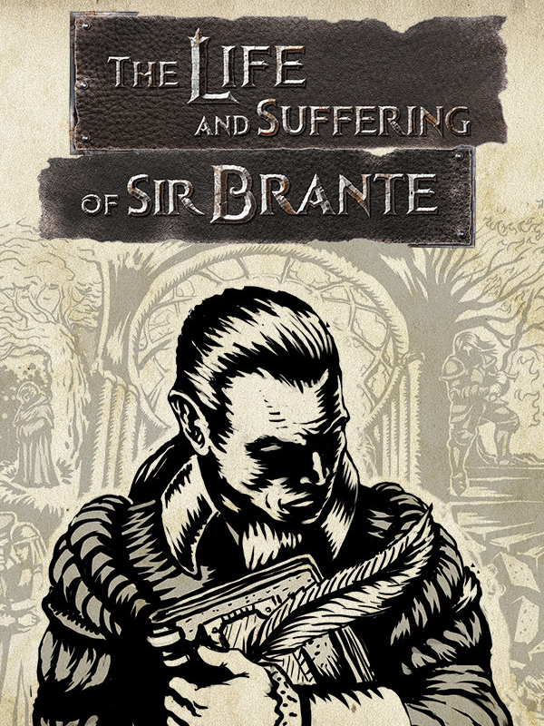

The Life and Suffering of Sir Brante - Chapter 1 & 2
Detalhes
 |
|
| Tempo de jogo | Não Jogado |
| Última Atividade | Nunca |
| Adicionado | 07/06/2026 0:35:42 |
| Modificado | 07/06/2026 0:50:39 |
| Status de Conclusão | Not Played |
| Biblioteca | Gog |
| Fonte | GOG |
| Plataforma | PC (Windows) |
| Data de Lançamento | 04/03/2021 |
| Pontuação da Comunidade | 81 |
| Avaliação da crítica | 85 |
| Pontuação do Usuário | |
| Gênero | Adventure Indie Role-playing (RPG) Simulator Strategy Visual Novel |
| Desenvolvedor | Sever |
| Editor | 101XP |
| Funções | Single Player |
| Links | Steam Official Website Community Wiki Epic GOG Discord Twitch YouTube Playstation |
| Tag | |
Descrição


The free version of The Life and Suffering of Sir Brante — Chapter 1&2 chronicles the early years of Sir Brante's journey. Explore the world of the Blessed Arknian Empire and experience first-hand the cruel customs and order that govern it, then decide who you want to become: an inquisitor, a judge... or a rebel!
The Life and Suffering of Sir Brante is a narrative-driven RPG that comes to life on the pages of the protagonist's journal. Set in a ruthless world where any form of dissent is mercilessly crushed, the story follows a man who has dared to challenge the existing order. Set out on a lifelong journey and become an individual able to carve out their own destiny... But remember that freedom never comes cheap.
Life in the Great Arknian Empire is harsh and its hardest Lot is yours by the circumstance of birth. You are a commoner, holding no rights and no title. To seize your fate and become the rightful heir to the legacy of the Brante family you will have to come to grips with ossified tradition and prejudice. Embarking on a life-long journey from one's birth until true death, you will have to endure great upheavals, face adversity, and make many difficult choices. Every decision will affect not only the protagonist, his family, and loved ones, but may even topple the foundation of the Empire itself.
Key features
At the turn of time
Every imperial citizen's life is predetermined by their estate. The deities known as the Twin Gods have bestowed this truth to the world, dividing mortals into Lots. The nobles lead and rule over others, while the clergy guides people on the one true path, and the lowborn suffer, toiling away for the glory of the Empire. You may accept your fate without question, but it is also in your power to change the cosmic order that governs all.

Your choice is not an illusion
Divided into chapters, the game keeps track of the player's deeds, the skills they acquired, as well as other overlapping circumstances that shape a unique plotline for each playthrough. Every decision has its consequences and you will be held accountable throughout the entire journey. To protect your family and loved ones, to impose the rule of the Emperor and make a fortune, or to try and change the world as you see fit... Make your choice, but beware of the follies of pride and ambition.

Find your own path
The first complete walkthrough can take you upwards of 15 hours! The unpredictable conclusion to the game's story hinges solely on your actions: the fates of your character and members of his family, their friends and rivals, as well as the outcome of the monumental events that shall determine the future of the Empire – you can decide it all!